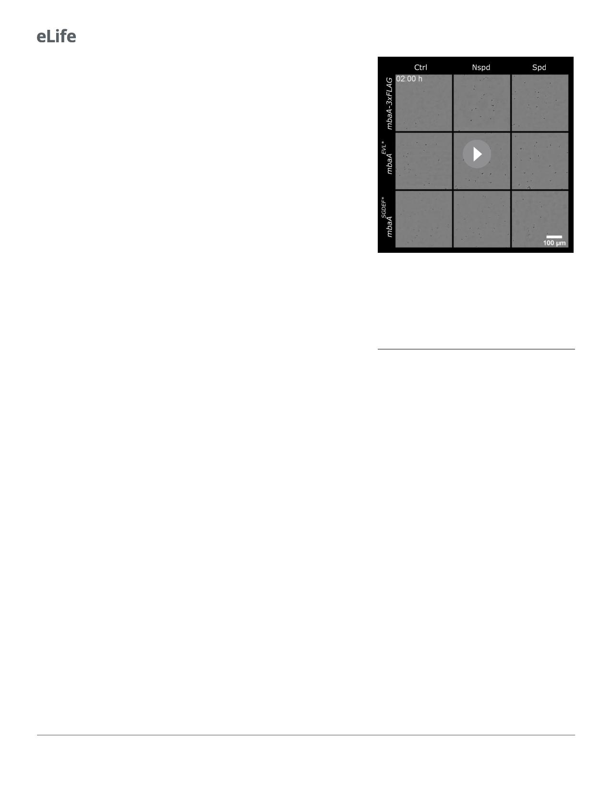

Research article
Microbiology and Infectious Disease
reporter output (Figure 3E). These results show
that the dynamic response of WT to polyamines
requires MbaA. We suspect that the minor reduc-
tion in biofilm production that occurred in the
DmbaA mutant when supplied polyamines is due
to non-specific effects, perhaps via interaction of
polyamines with negatively charged matrix com-
ponents. We next investigated the role of the
polyamine periplasmic binding protein NspS that
transmits polyamine information to MbaA. In the
absence of its partner polyamine binding protein,
NspS, MbaA is thought to function as a constitu-
tive phosphodiesterase (Cockerell et al., 2014).
Consistent with this model, deletion of nspS in an
otherwise WT strain reduced overall peak biofilm
biomass by 65% and dispersal initiated 4 hr prior
to when dispersal begins in the WT (Figure 3—
figure supplement 1). In the DnspS mutant, c-di-
GMP levels were lower than in the WT as judged
by the c-di-GMP reporter (Figure 3F), showing
that MbaA is locked as a constitutive phosphodi-
esterase. Exogenous addition of polyamines had
no effect on c-di-GMP levels (Figure 3F).
Together, these findings demonstrate that the
WT V. cholerae response to polyamines is con-
trolled by the NspS-MbaA polyamine sensing
circuit.
Video 2. Representative time-lapse images of the
biofilm lifecycles of the mbaA-3xFLAG,
mbaAEVL*À3xFLAG, and mbaASGDEF*À3xFLAG V.
cholerae strains following treatment with water (Ctrl),
100 mM norspermidine (Nspd), or 100 mM spermidine
(Spd).
Both the MbaA EVL and SGDEF domains are required for MbaA to
detect polyamines
We wondered how the putative MbaA phosphodiesterase and diguanylate cyclase enzymatic activi-
ties contribute to the V. cholerae responses to norspermidine and spermidine. The cytoplasmic
domain of MbaA exhibits phosphodiesterase but not diguanylate cyclase activity in vitro
(Cockerell et al., 2014). We reasoned that, when an intact regulatory domain is present, MbaA
could possess both enzymatic activities, with the activity of each domain inversely controlled by
NspS binding. To probe the role of each domain, we introduced inactivating point mutations in the
catalytic motifs. To ensure that our mutations did not destabilize MbaA, we first fused MbaA to
3xFLAG and introduced the gene encoding the fusion onto the chromosome at the mbaA locus.
Tagging did not alter MbaA control over the biofilm lifecycle (Figure 4—figure supplement 1A,
Video 2). To inactivate the MbaA phosphodiesterase activity, we substituted the conserved catalytic
residue E553 with alanine, converting EVL to AVL (referred to as EVL* henceforth). This change did
not alter MbaA-3xFLAG abundance (Figure 4—figure supplement 1B). V. cholerae harboring
MbaAEVL* exhibited an increase in biofilm biomass and a strong biofilm dispersal defect (Figure 4A),
and only a modest response to exogenous polyamines, with norspermidine eliciting some inhibition
of biofilm dispersal and spermidine driving a small reduction in overall biofilm biomass (Figure 4B,
Video 2). Treatment with norspermidine did increase c-di-GMP levels in V. cholerae carrying
MbaAEVL* as judged by the reporter output (Figure 4C), albeit not to the level of WT (Figure 3C),
suggesting that the V. cholerae mbaAEVL* mutant, which is incapable of c-di-GMP degradation,
retains the capacity to synthesize some c-di-GMP via the MbaA SGDEF domain. In contrast, the V.
cholerae mbaAEVL* strain displayed little reduction in c-di-GMP levels in response to spermidine,
presumably because it lacks the phosphodiesterase activity required to degrade c-di-GMP
(Figure 4C). Thus, despite the fact that the purified cytoplasmic domain functioned only as a phos-
phodiesterase in vitro, our results suggest that, in vivo, MbaA is capable of synthesizing c-di-GMP in
the presence of norspermidine. To validate this prediction, we altered the conserved catalytic resi-
dues D426 and E427 to alanine residues, yielding the inactive MbaA SGAAF variant (referred to as
SGDEF*). These substitutions did not affect protein levels (Figure 4—figure supplement 1B). In
8 of 20